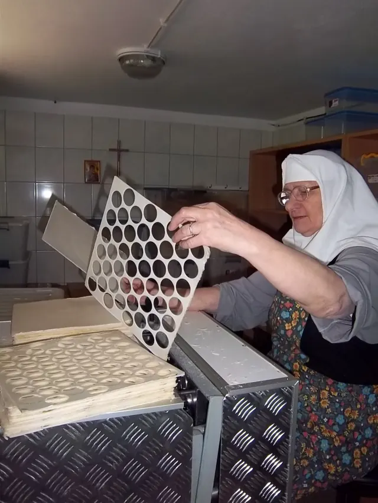
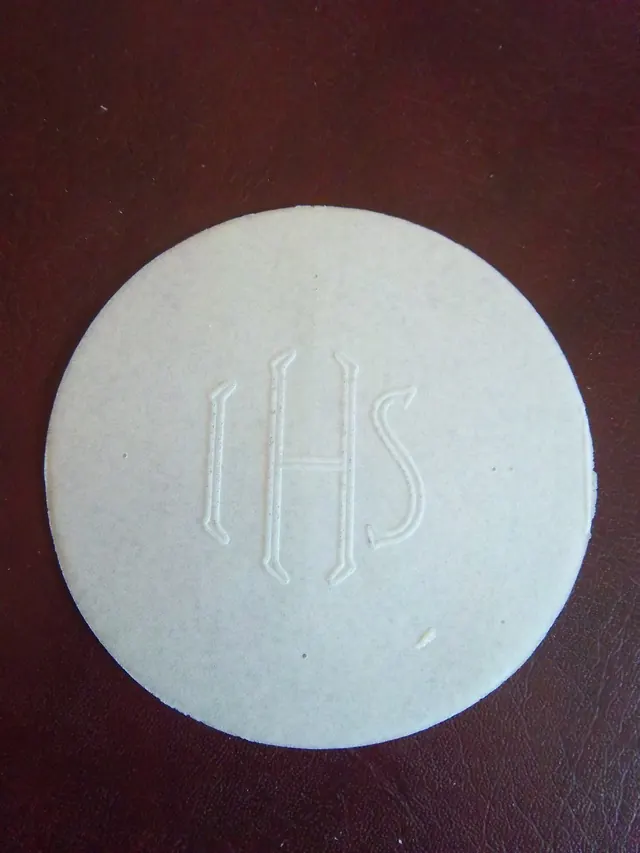
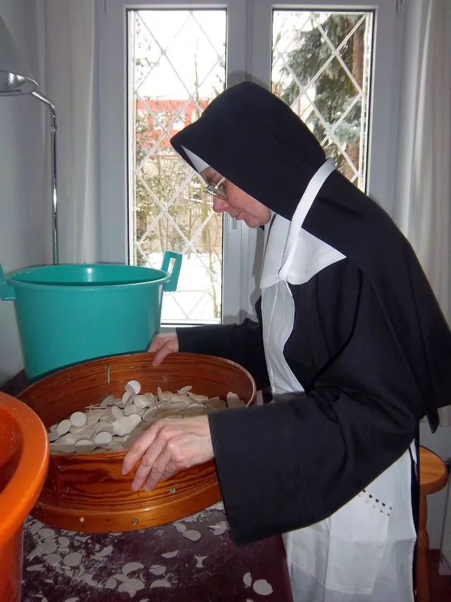
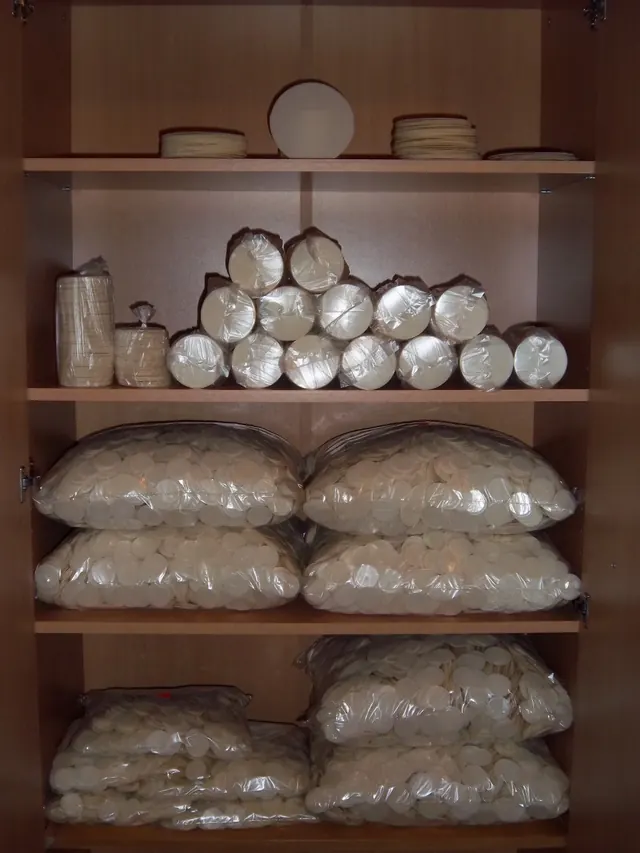

Hostie i komunikanty
Hostie i komunikanty
- Hostie mszalne, średnica 8 cmpo 50 i 100 szt.
- Hostie do koncelebry, średnica 12 cmna zamówienie
- Komunikanty cienkiepo 1000-5000 szt.
- Komunikanty grubepo 1000-5000 szt.
W sprawie zamówień prosimy o kontakt telefoniczny lub mailowy.